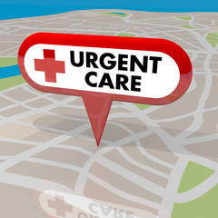

Vaginal rejuvenation
Today there are various gynecological treatments available for women that bring comfort, confidence, and less pain. One of those special treatments is Vaginal Rejuvenation. It includes everything that has to do with the corrective procedures on the vagina like tightening or treatment for increasing lubrication. These procedures also know as feminine rejuvenation are usually performed to correct problems that may occur after giving birth. These conditions are – lack of tightness in the vagina, urinary incontinence, absence of lubrication, etc. Vaginal Rejuvenation is increasing in popularity as the issues after childbirth can affect a woman’s sense of well-being and sexuality.
Primary care
Primary care is the day-to-day healthcare given by a health care provider. Typically this provider acts as the first contact and principal point of continuing care for patients within a healthcare system, and coordinates other specialist care that the patient may need.
House calls
Home-based primary care—or the modern-day “house call”—delivers primary care to the most medically complex (and costliest to the health care system) homebound or home-limited patients in society. These patients typically have no continuous follow-up care, which continues the cycle of poor health management and is even more expensive and exhaustive for patients and their caregivers.
24 hour health care

24 hour medical clinic in Leesburg, Fl 34748
Telemedicine

Telehealth is the distribution of health-related services and information via electronic information and telecommunication technologies. It allows long-distance patient and clinician contact, care, advice, reminders, education, intervention, monitoring, and remote admissions
Men's health
Get routine health checkups, screenings and (don't forget) dental exams. Just because you're healthy doesn't mean you're off the hook. Going to your health care provider for regular checkups could just save your life. By keeping up with these appointments, your health care provider can make sure you stay up-to-date with immunizations (Yes, they're for adults, too!) and important preventive health screenings. It also gives you a chance to talk about any health concerns or changes you've noticed. Make sure to talk with your health care provider about your family medical history and ask which screenings you might need. For example:
Women's health
Women's health refers to the health of women, which differs from that of men in many unique ways. Women's health is an example of population health, where health is defined by the World Health Organization
Urgent Care
Urgent care is a category of walk-in clinic in the United States focused on the delivery of ambulatory care in a dedicated medical facility outside of a traditional emergency department.
Diabetes specialist
A diabetes specialist is called an endocrinologist. Endocrinologists specialize in the glands of the endocrine (hormone) system. The pancreas is the gland involved in diabetes. The pancreas produces insulin, and problems with insulin are what managing your diabetes is about.
Cash based medicine
Sometimes called direct pay, and closely related to concierge care, this sort of business model was once seen as the perquisite of rich folks and medical tourists from foreign lands. But nowadays many of the people seeking cash-based care are middle-class Americans with high-deductible insurance plans.
No insurance health care
Even if you don't have health insurance, you can still see a doctor and receive medical treatment—preventive care, acute care, urgent care, or emergency care. The difficult part is to find services that are affordable. The best places to start are community health clinics, walk-in clinics, and direct care providers.